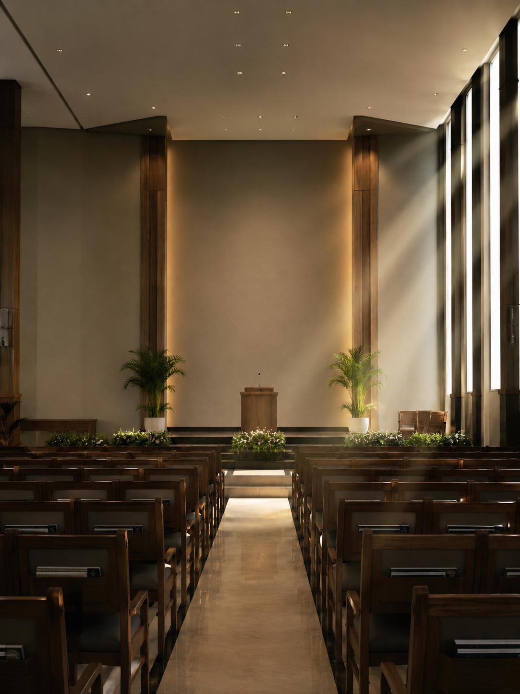
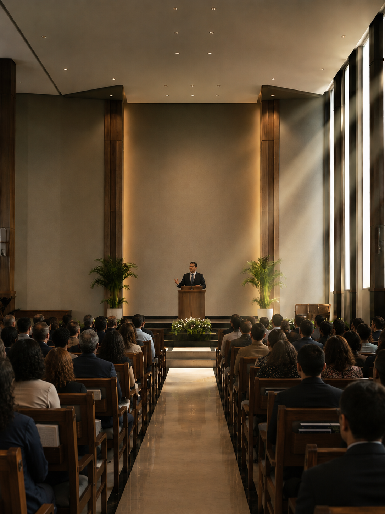

Prólogo
Uma comunidade ✦ chamada para fora do mundo
A palavra grega ekklesía, traduzida como “igreja”, significa literalmente “os chamados para fora”. Mais do que um edifício de pedra ou madeira, a Igreja é a assembleia viva dos que responderam ao chamado de Deus em Cristo Jesus.
Antes do tempo existir, Deus já planejava reunir um povo que refletisse o Seu caráter diante do universo. Esse povo é a Igreja — uma família espiritual formada por todos os que, pela fé em Jesus, foram resgatados das trevas para a luz admirável do Reino. Esta especialidade convida o desbravador a descobrir quem fundou essa comunidade, a quem ela pertence, qual é a sua missão e por que, em pleno século XXI, continua sendo essencial reunir-se com os irmãos para adorar, aprender e servir.
O Fundador
Cristo edificou · sobre Si mesmo
Em Cesareia de Filipe, diante de um cenário pagão repleto de templos a deuses falsos, Jesus fez uma das declarações mais ousadas de toda a Escritura: “Edificarei a Minha igreja, e as portas do inferno não prevalecerão contra ela.” (Mateus 16:18). O fundador da Igreja cristã não foi Pedro, nem Paulo, nem qualquer reformador — foi o próprio Cristo.
O apóstolo Paulo confirma com clareza absoluta: “Ninguém pode pôr outro fundamento, além do que foi posto, o qual é Jesus Cristo.” (1 Coríntios 3:11). Toda doutrina, toda autoridade, toda esperança da Igreja repousa unicamente sobre Ele. A Igreja é, assim, o edifício santo cujo alicerce são os apóstolos e profetas, sendo Cristo Jesus a principal pedra angular (Efésios 2:19-20).
“A igreja é a fortaleza de Deus, sua cidade de refúgio, que Ele mantém num mundo revoltado.”Ellen G. White · Atos dos Apóstolos

Hebreus 10 · 25
Não deixemos de congregar-nos, como é costume de alguns; antes, façamos admoestações, e tanto mais quanto vedes que se aproxima aquele dia.
A quem pertence
Comprada por sangue
Paulo, ao despedir-se dos anciãos de Éfeso, declarou: “Cuidai de vós mesmos e de todo o rebanho sobre o qual o Espírito Santo vos constituiu bispos, para apascentardes a igreja de Deus, que Ele resgatou com o Seu próprio sangue.” (Atos 20:28).
A Igreja não pertence ao pastor, ao ancião, à denominação, nem mesmo aos seus membros. Ela é propriedade exclusiva de Deus, adquirida ao preço infinito do sacrifício de Cristo no Calvário. Por isso, somos administradores, jamais donos — e o serviço prestado a ela é, na verdade, serviço prestado ao próprio Senhor.
Três imagens bíblicas
· Edifício — Cristo é a pedra angular (Ef 2:20).
· Corpo — Cristo é a cabeça (Cl 1:18).
· Noiva — Cristo é o noivo amado (Ef 5:25).
Cada imagem revela uma face do mistério: somos morada, somos vida, somos amor pactuado.
Coluna e Firmeza da Verdade
Por que preservar e ensinar?
Paulo descreve a Igreja como “coluna e firmeza da verdade” (1 Timóteo 3:15). Em um mundo onde tudo é relativizado, ela é chamada a sustentar, viva e visível, a revelação que Deus fez de Si mesmo nas Escrituras.
Identidade
É a verdade que define quem é Deus, quem somos nós e qual o nosso destino eterno. Sem ela, a Igreja perde a razão de existir.
Missão
“Ide, portanto, fazei discípulos de todas as nações” (Mateus 28:19-20). Ensinar é o coração do mandato evangélico.
Santificação
“Santifica-os na verdade; a Tua palavra é a verdade” (João 17:17). A verdade molda o caráter à imagem de Cristo.
Vigilância
“Pois virá tempo em que não suportarão a sã doutrina” (2 Timóteo 4:2-4). A Igreja preserva a verdade contra o engano dos últimos dias.

O Corpo de Cristo
Muitos membros · um só corpo
“Porque, assim como o corpo é um e tem muitos membros, e todos os membros, sendo muitos, formam um só corpo, assim também com respeito a Cristo.” (1 Coríntios 12:12, 27). A Igreja é apresentada como organismo vivo, não como organização morta.
Cristo é a Cabeça (Colossenses 1:18); cada crente é um membro com função específica. Como no corpo humano, o olho não pode dizer à mão “não preciso de ti”, nem a cabeça aos pés. Há diversidade de dons, mas uma só vida que pulsa em todos: o Espírito Santo. Romanos 12:4-5 reforça: “somos muitos membros em um corpo... assim também nós, conquanto muitos, somos um só corpo em Cristo.”
Isso significa que ninguém é descartável e ninguém é autossuficiente. O membro que se afasta do corpo enfraquece a si mesmo e pode afastar a comunidade inteira.
A Oração de Jesus
Unidade que ✦ revela o Pai
Em Sua oração sacerdotal, Jesus suplicou: “Para que todos sejam um; e como és Tu, ó Pai, em Mim, e Eu em Ti, também sejam eles um em nós, para que o mundo creia que Tu me enviaste.” (João 17:20-21). E em Mateus 18:19-20 prometeu: “Onde estiverem dois ou três reunidos em Meu nome, ali estou Eu no meio deles.”
A unidade da Igreja é o argumento apologético mais poderoso do Evangelho. Quando os irmãos vivem em harmonia, em oração concordante, o próprio Cristo Se faz presente, e o mundo enxerga, em carne e osso, o amor do Pai. A unidade não é uniformidade — é a sinfonia de diferentes instrumentos tocando a mesma melodia: Jesus.
Concordância na oração
Mateus 18:19 mostra que a oração unânime tem promessa especial. Não é magia das palavras, mas reflexo de corações alinhados à vontade de Deus.
Presença prometida
“Ali estou Eu no meio deles” (Mt 18:20). A presença de Cristo não depende de multidão, mas de comunhão genuína em Seu nome.
Por que congregar?
Não deixemos · de nos reunir
Hebreus 10:24-25 é um chamado urgente: “Consideremo-nos também uns aos outros, para nos estimularmos ao amor e às boas obras. Não deixemos de congregar-nos.” Congregar é mandamento, não opção devocional.
Participar dos cultos e dos ministérios da igreja é vital porque:
- Fortalece a fé — ouvimos juntos a Palavra e somos edificados.
- Combate o isolamento — o cristão sozinho é alvo fácil do inimigo.
- Multiplica os dons — servir é descobrir o propósito que Deus colocou em nós.
- Antecipa o céu — adorar em comunidade é ensaio da grande reunião final.
Compartilhar essa verdade com um amigo é parte do chamado: convide alguém para experimentar a alegria de pertencer ao corpo de Cristo.
“Venha comigo no sábado. Há um lugar onde sou amado mesmo nos meus piores dias — e há lugar para você também.”
Cada vez que você cruza a porta da igreja, você dá um passo profético na direção da Nova Jerusalém.
Conversa com o Pastor
A Igreja Local · por dentro
Converse com seu pastor ou ancião.
Pergunta 01
Como são feitas as nomeações dos líderes da igreja local?
Anualmente (ou a cada dois anos, conforme decisão local), a igreja elege uma Comissão de Nomeações em reunião administrativa. Essa comissão, presidida por alguém indicado pela comissão da igreja, estuda em oração os nomes dos membros disponíveis e propõe à igreja, em sessão plena, a relação de oficiais para o próximo período. A assembleia da igreja vota cada nome, e os eleitos são empossados em culto solene. O critério não é popularidade, mas espiritualidade, dom e fidelidade.
Pergunta 02
Quais ministérios a igreja possui?
A IASD organiza-se em ministérios para cumprir a missão integralmente. Entre os principais: Escola Sabatina, Ministério Pessoal, Ministério da Mulher, Ministério do Homem, Ministério Jovem (incluindo Desbravadores e Aventureiros), Ministério da Criança, Comunicação, Educação, Saúde, Mordomia Cristã, Liberdade Religiosa, Música, Diaconato e Diaconisas, Ação Solidária Adventista (ASA) e Ministério da Família.
Pergunta 03
O que é a Comissão da Igreja?
É o órgão administrativo entre uma assembleia e outra. Composta por pastor (presidente), primeiro ancião, anciãos, diáconos-chefes, tesoureiro, secretário, líderes de ministérios e demais membros eleitos pela igreja, representa toda a congregação na condução das atividades, finanças, disciplina e missão. Suas decisões refletem a vontade da igreja entre reuniões plenárias.
Pergunta 04
Como a Comissão da Igreja funciona?
Reúne-se ordinariamente todo mês (e extraordinariamente quando necessário). É aberta com oração e devocional. O secretário registra em ata cada deliberação. Toda decisão segue o princípio de consenso espiritual, buscando primeiro a vontade de Deus revelada na Bíblia e nos Escritos de Ellen G. White, e respeitando o Manual da Igreja. Os assuntos típicos incluem: recepção e transferência de membros, planejamento evangelístico, aprovação de orçamento, indicações para cargos e disciplina pastoral.
Linha do Tempo
Da promessa · à plenitude
A primeira congregação
Adão e Eva caminhavam com Deus na viração do dia (Gn 3:8) — o primeiro culto da história.
O povo escolhido
Deus chama Israel para ser “reino de sacerdotes e nação santa” (Êx 19:6), prefigurando a Igreja universal.
Cristo edifica Sua Igreja
No Calvário, o véu se rasga; a Igreja deixa de ser nacional e se torna universal, fundada no sangue do Cordeiro.
O sopro do Espírito
Atos 2 marca o nascimento público da Igreja cristã, com 3.000 batismos em um único dia.
Organização da IASD
Em 21 de maio de 1863, a Igreja Adventista do Sétimo Dia é oficialmente organizada em Battle Creek, Michigan, EUA.
O remanescente fiel
Apocalipse 12:17 e 14:6-12 descrevem a Igreja dos últimos dias: guardiã dos mandamentos, da fé de Jesus e da mensagem dos três anjos.
A grande reunião
Quando Cristo voltar, a Igreja militante se tornará Igreja triunfante — para sempre com o Senhor (1 Ts 4:17).
Você Sabia?
Curiosidades · da Igreja
Ekklesía aparece 114 vezes no Novo Testamento e jamais se refere a um prédio, sempre a pessoas.
A IASD está presente em mais de 200 países e fala mais de 900 idiomas em sua obra mundial.
O nome “Adventista do Sétimo Dia” foi escolhido em 1860 — destaca a esperança do Advento e a guarda do sábado.
O Manual da Igreja só pode ser alterado em Assembleia Geral, realizada a cada 5 anos.
O símbolo oficial da IASD reúne cruz, Bíblia aberta, chama e três linhas — representando os três anjos de Apocalipse 14.
Os 28 Princípios de Fé sintetizam o que a igreja crê — e o princípio nº 12 fala justamente sobre “A Igreja”.
Texto para Memorização
Hebreus 10:25 · grave no coração
“Não deixemos de congregar-nos, como é costume de alguns; antes, façamos admoestações, e tanto mais quanto vedes que se aproxima aquele dia.”
— Hebreus 10:25 —
Dica de memorização
Divida o versículo em três partes: o convite (“não deixemos de congregar-nos”), o alerta (“como é costume de alguns”) e a urgência (“aquele dia se aproxima”). Repita cada parte sete vezes ao longo de uma semana.
Aplicação prática
“Aquele dia” é a volta de Jesus. Quanto mais perto estamos, mais necessária se torna a comunhão. Cada culto, cada reunião do clube, é treinamento para a eternidade — e fortaleza contra o cansaço espiritual.
Epílogo
Sempre Alerta · Sempre Fiéis
A Igreja não é um lugar para onde vamos — é quem somos, juntos, em Cristo. Que cada pessoa, ao concluir este estudo, leve no peito a certeza de pertencer ao corpo vivo do Salvador e a missão de convidar outros a essa mesma família eterna.
✦ MARANATA ✦